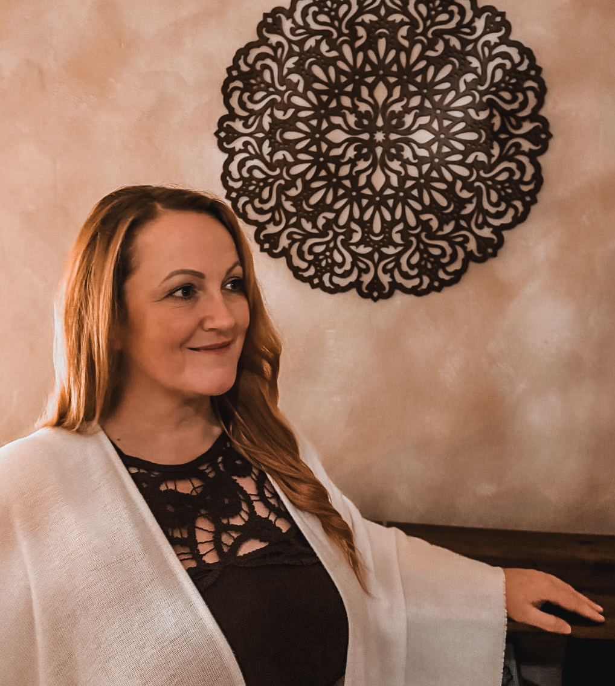
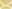
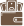

Štěpánka Kee
- Ájurvédské masáže a procedury
- Lymfatické masáže
- Relaxační masáže

Dopřejte si chvíle hluboké relaxace, regenerace a harmonie. Objevte naši nabídku ájurvédských a relaxačních masáží, lymfatických masáží, beauty procedur a Head Spa v Žatci.
Vyberte si svou masérku a rezervujte si termín pohodlně online a nebo telefonicky.
Ať už touží po relaxační masáži, ájurvédské proceduře nebo jedinečném zážitku Head Spa, s dárkovým poukazem od nás si dopřejí pravou blahodárnou péči.
Tradiční ajurvédská technika Champi, která přináší okamžitou úlevu přetížené mysli i tělu. V Blahodárné péči tato procedura zahrnuje jemné a hluboce uvolňující ošetření hlavy, obličeje, krku a ramen. Účinně rozpouští napětí v šíji, ulevuje od bolestí hlavy i unavených očí a zároveň podporuje zdraví a kvalitu vlasů. Masáž působí na fyzické i mentální úrovni – odplavuje každodenní stres, psychickou únavu a vnitřní neklid a navozuje pocit hlubokého míru a duševní pohody.
RezervovatDopřejte úlevu partiím, které během dne nesou největší tíhu stresu a únavy. Tato komplexní ájurvédská procedura propojuje uvolňující masáž zad a šíje s jemnou péčí o přetížené ruce a hlavu. Pomocí teplých bylinných olejů a cílených tahů rozpouští hluboké svalové napětí, ulevuje od bolestí hlavy i ztuhlých paží a harmonizuje tok životní energie. Výsledkem je okamžitý pocit lehkosti v horní polovině těla, zklidnění roztěkané mysli a hluboká regenerace celého organismu.
RezervovatÚleva pro vaše nohy, které vás nesou celým dnem. Terapie Pada Abhyanga propojuje nanášení teplého bylinného oleje s jemnou, zklidňující masáží nohou a chodidel. Tato hluboce uvolňující technika stimuluje reflexní body, harmonizuje nervový systém a navrací celému tělu ztracenou rovnováhu a vitalitu. V Blahodárné péči je tento rituál navíc obohacen o jemný bylinný peeling nohou, který pokožku dokonale zjemní, prokrví a připraví na vstřebání vzácných olejů.
RezervovatAbhyanga masáž je tradiční rituál péče o tělo, který vychází z tisícileté indické tradice. Masáž probíhá pomocí speciálních teplých bylinných olejů, které pečlivě vybíráme přesně podle vaší aktuální fyzické i psychické konstituce (dóši). Hluboké a plynulé tahy harmonizují celý organismus a odplavují nahromaděný stres. V Blahodárné péči rituál zahajujeme prohřátím těla teplými ručníky, díky čemuž se pokožka uvolní a léčivé bylinné oleje proniknou mnohem hlouběji do tkání. Pro maximální účinek doporučujeme nechat oleje působit ještě 30 až 60 minut po masáži a poté si doma dopřát horkou sprchu či koupel.
RezervovatHloubková očista, hebkost a nová energie. V Blahodárné péči tuto proceduru spojuji s olejovou masáží Abhyanga, při které využívám výživný olej a byliny odpovídající konstituci vašeho těla (dóši). Dlouhé masážní tahy odstraňují odumřelé buňky, čistí póry do hloubky a podporují přirozenou regeneraci a obnovu pokožky. Peeling je skvělou celoroční péčí – před létem pokožku dokonale připraví na rovnoměrné opálení a v létě ji zase hloubkově vyživí a promastí po slunění. Pro maximální účinek doporučuji proceduru spojit s prohřátím v bylinném parním boxu (Swedana). Po této masáži vás čeká teplá sprcha a pocit lehkosti.
RezervovatHluboké prohřátí těla a síla léčivých bylin! Tradiční ájurvédská terapie Pinda Sweda využívá plátěné měšce naplněné vybranou směsí bylin a vysoce kvalitní přírodní oleje. V Blahodárné péči měšce nahřívám v horké páře. Masáž teplým olejem a nahřáté měšce pomohou pokožce otevřít póry a uvolněné bylinné esence pronikají přímo do hlubších tkání, svalů i kloubů. Speciálními masážními tahy – poťukáváním a kroužením ošetřuji celé tělo. Terapie účinně rozpouští svalovou ztuhlost a bolest, podporuje přirozenou detoxikaci, odplavuje hlubokou únavu i vyčerpání a celkově posiluje vaše zdraví a vitalitu.
RezervovatToužíte po zážitku jako v pravých ájurvédských lázních? Dopřejte si náš nejkomplexnější rituál Rasayana, který propojuje jedinečnou kombinaci uklidňujících a očistných procedur. Během této terapie se vaše tělo prohřeje v tradičním bylinném parním boxu (Swedana), uvolní se při celotělové olejové masáži od konečků prstů na nohou až po hlavu a obličej, zbaví se únavy díky jemnému peelingu zad a vše završí hloubkově vyživující bahenní zábal nohou a osvěžující závěrečná sprcha. Z Blahodárné péče budete odcházet lehcí, odpočatí a doslova jako znovuzrození.
RezervovatIdeální volba pro rychlou, ale hlubokou úlevu během náročného dne. Tato půlhodinová procedura se plně soustředí na nejvíce přetížené partie horní poloviny těla, kde se nejčastěji ukládá stres a únava z dlouhého sezení. Cílenými hmaty rozpouští svalové uzlíky v oblasti zad, trapézů a krční páteře, ulevuje od ztuhlosti a navrací tělu příjemnou lehkost. Během pouhých 30 minut odplaví nahromaděné napětí a zanechá vaši mysl svěží a odpočatou.
RezervovatVychutnejte si doslova čokoládový sen! Tento jedinečný rituál plný vůně čokolády, relaxace a hýčkání propojuje pečující ošetření pokožky, příjemné teplo, aromaterapii a cenné látky obsažené v pravém kakau. To je bohaté na antioxidanty a minerály, které chrání buňky před stárnutím, podporují elasticitu kůže a pomáhají zjemňovat projevy celulitidy.
Procedura kombinuje uvolňující masáž mandlovým olejem, jemný tělový peeling a následnou masáž teplou čokoládou, jejíž podmanivá vůně okamžitě zlepší náladu a navodí pocit hlubokého bezpečí. Rituál pokračuje 10 až 30 minutovým čokoládovým zábalem, během kterého si naplno užijete chvíle klidu a necháte na sebe působit hřejivé teplo. Závěrečná sprcha odstraní zbytky čokolády a zanechá pokožku sametově hebkou. Po domluvě lze sprchu vynechat a čokoládu pouze jemně setřít ručníkem.
RezervovatUžijte si vědomý, láskyplný dotek, který je jednou z nejpřirozenějších cest k uzdravení těla i duše. Vědomé doteky v nás probouzejí pocit bezpečí, posilují imunitu, harmonizují energetické dráhy v těle a odplavují nahromaděný stres. Relaxační masáž v Blahodárné péči je citlivou kombinací rozmanitých masážních technik, které vždy přizpůsobujeme vašim aktuálním přáním a potřebám. Během ošetření citlivě propojujeme různé hloubky tlaku a plynulých pohybů s hřejivými lávovými kameny. Výsledkem je hluboké uvolnění svalů, zlepšení nálady a navození vnitřního klidu.
Před začátkem masáže si intuitivně zvolíte kartu s mandalou, jež v sobě nese poselství konkrétní byliny a její vůně. Podle vašeho výběru vám přímo na míru připravíme směs esenciálního a základního oleje, jejíž aroma pak během masáže dokonale zharmonizuje vaše tělo i mysl.
RezervovatManuální lymfatická masáž je speciální jemná hmatová technika, která podporuje přirozené pročištění tkání, urychluje tok lymfy v těle a zmírňuje otoky. Náš lymfatický systém bývá často přetížený sedavým zaměstnáním, dlouhým stáním, nedostatkem pohybu, ale i nevhodnou stravou či těsným oblečením. Když se tok lymfy zpomalí, tělo začne zadržovat vodu, dostavuje se únava, oslabení imunity, otoky nohou nebo celulitida. V Blahodárné péči se můžete těšit na zcela odlišný zážitek než u klasické masáže. Manuální lymfatická masáž je velmi pomalá, jemná až hladivá a mimořádně příjemná procedura, při které si dokonale odpočinete.
RezervovatDopřejte úlevu partiím, které během dne nesou největší tíhu stresu a únavy. Tato komplexní ájurvédská procedura propojuje uvolňující masáž zad a šíje s jemnou péčí o přetížené ruce a hlavu. Pomocí teplých bylinných olejů a cílených tahů rozpouští hluboké svalové napětí, ulevuje od bolestí hlavy i ztuhlých paží a harmonizuje tok životní energie. Výsledkem je okamžitý pocit lehkosti v horní polovině těla, zklidnění roztěkané mysli a hluboká regenerace celého organismu.
RezervovatAbhyanga masáž je tradiční rituál péče o tělo, který vychází z tisícileté indické tradice. Masáž probíhá pomocí speciálních teplých bylinných olejů, které pečlivě vybíráme přesně podle vaší aktuální fyzické i psychické konstituce (dóši). Hluboké a plynulé tahy harmonizují celý organismus a odplavují nahromaděný stres. V Blahodárné péči rituál zahajujeme prohřátím těla teplými ručníky, díky čemuž se pokožka uvolní a léčivé bylinné oleje proniknou mnohem hlouběji do tkání. Pro maximální účinek doporučujeme nechat oleje působit ještě 30 až 60 minut po masáži a poté si doma dopřát horkou sprchu či koupel.
RezervovatHloubková očista, hebkost a nová energie. V Blahodárné péči tuto proceduru spojuji s olejovou masáží Abhyanga, při které využívám výživný olej a byliny odpovídající konstituci vašeho těla (dóši). Dlouhé masážní tahy odstraňují odumřelé buňky, čistí póry do hloubky a podporují přirozenou regeneraci a obnovu pokožky. Peeling je skvělou celoroční péčí – před létem pokožku dokonale připraví na rovnoměrné opálení a v létě ji zase hloubkově vyživí a promastí po slunění. Pro maximální účinek doporučuji proceduru spojit s prohřátím v bylinném parním boxu (Swedana). Po této masáži vás čeká teplá sprcha a pocit lehkosti.
RezervovatUžijte si vědomý, láskyplný dotek, který je jednou z nejpřirozenějších cest k uzdravení těla i duše. Vědomé doteky v nás probouzejí pocit bezpečí, posilují imunitu, harmonizují energetické dráhy v těle a odplavují nahromaděný stres. Relaxační masáž v Blahodárné péči je citlivou kombinací rozmanitých masážních technik, které vždy přizpůsobujeme vašim aktuálním přáním a potřebám. Během ošetření citlivě propojujeme různé hloubky tlaku a plynulých pohybů s hřejivými lávovými kameny. Výsledkem je hluboké uvolnění svalů, zlepšení nálady a navození vnitřního klidu.
Před začátkem masáže si intuitivně zvolíte kartu s mandalou, jež v sobě nese poselství konkrétní byliny a její vůně. Podle vašeho výběru vám přímo na míru připravíme směs esenciálního a základního oleje, jejíž aroma pak během masáže dokonale zharmonizuje vaše tělo i mysl.
RezervovatDopřejte si dokonalou harmonii smyslů a hloubkovou výživu pokožky v jednom luxusním rituálu. V Blahodárné péči tuto sladkou proceduru zahajuji jemným kokosovým peelingem, který šetrně odstraní odumřelé buňky a zanechá pokožku dokonale připravenou na další péči. Následuje uvolňující masáž spojující hebký mandlový olej a bohatý čokoládový masážní krém. Vůně kakaa a kokosu okamžitě odplaví stres, zlepší náladu a navodí pocit hlubokého bezpečí. Celý zážitek završí hřejivý zábal, během kterého se všechny vyživující látky vstřebají do hloubky a zanechají vaši pokožku sametově hebkou, pružnou a provoněnou.
RezervovatManuální lymfatická masáž je speciální jemná hmatová technika, která podporuje přirozené pročištění tkání, urychluje tok lymfy v těle a zmírňuje otoky. Náš lymfatický systém bývá často přetížený sedavým zaměstnáním, dlouhým stáním, nedostatkem pohybu, ale i nevhodnou stravou či těsným oblečením. Když se tok lymfy zpomalí, tělo začne zadržovat vodu, dostavuje se únava, oslabení imunity, otoky nohou nebo celulitida. V Blahodárné péči se můžete těšit na zcela odlišný zážitek než u klasické masáže. Manuální lymfatická masáž je velmi pomalá, jemná až hladivá a mimořádně příjemná procedura, při které si dokonale odpočinete.
RezervovatNechte se unést na vlnách exotických dálek a dopřejte své hlavě i mysli hlubokou regeneraci. Během procedury vás čeká jemný peeling a hloubkové čištění pokožky hlavy, uvolňující masáž vlasové části, šíje, ramen a dekoltu, vyživující vlasová maska i uklidňující vodní lázeň. Teplé bylinné oleje a kořenitě sladká vůně Cejlonu okamžitě odplaví nahromaděný stres, uleví od bolestí hlavy a navodí pocit naprostého klidu. Vaše vlasy zůstanou lesklé, vyživené a plné života.
RezervovatHluboký restart těla i mysli s péčí vytvořenou speciálně pro muže. V Blahodárné péči tento 90minutový rituál provádíme s luxusní ájurvédskou kosmetikou Spa Ceylon z pánské řady. Procedura začíná 60minutovým rituálem Head Spa, který důkladně pročistí a vyživí pokožku hlavy, podpoří zdravý růst vlasů a odplaví každodenní napětí. Součástí péče je uvolňující masáž hlavy, obličeje, šíje a trapézů, revitalizační obličejová maska, uklidňující vlasová bylinná lázeň a šetrné vysušení vlasů (bez stylingu). Na závěr vás čeká 30minutová cílená masáž zad, která povolí ztuhlé svaly a navodí pocit naprosté lehkosti a nové energie.
RezervovatDopřejte si výjimečný rituál celkové obnovy, který propojuje hloubkovou regeneraci vlasů s lehkostí celého těla. V Blahodárné péči začínáme rituálem Head Spa, během kterého uvolníme napětí masáží obličeje, hlavy, šíje a trapézů. Vaší pokožce hlavy i vlasům dopřejeme intenzivní výživu, regenerační masku a uklidňující vlasovou bylinnou lázeň, po které následuje šetrné vysušení vlasů (bez finálního stylingu).
Po péči o hlavu plynule navazuje jemná lymfatická masáž rukou a nohou. Ta podpoří přirozenou očistu organismu, odplaví přebytečnou vodu a zbaví vás pocitu těžkých končetin. Z salonu budete odcházet odpočatá od hlavy až k patě.
Délka procedury: 110 minut (70 min Head Spa + 40 min lymfatická masáž).
Poznámka: U dlouhých vlasů účtujeme příplatek 100–200 Kč dle jejich délky a hustoty.
RezervovatPři maderoterapii využívám anatomicky tvarované dřevěné válečky a nástroje. Tuto proceduru provádím s citem a respektem k vašemu tělu. Masáž odplavuje přebytečnou vodu i toxiny, účinně vyhlazuje projevy celulitidy, zpevňuje kontury postavy a zbavuje vás pocitu těžkých nohou. Zároveň příjemně prohřívá a uvolňuje ztuhlé svaly, takže odcházíte nejen s vyhlazenou pokožkou, ale i dokonale odpočatá.
Rezervovat„Naše planeta nepotřebuje víc úspěšných lidí. Zoufale potřebuje ty, kteří tvoří mír, léčí, obnovují, vyprávějí příběhy a milují vše živé.“
– Dalajláma
Vítejte v Blahodárné péči. S radostí se s vámi podělím o to, co miluji – o kouzlo ájurvédských a relaxačních masáží.
Otevření vlastního salonu pro mě bylo splněním dlouholetého snu. Cítím obrovskou vděčnost za všechny přátele, které mi život přivedl do cesty a kteří mi otevřeli dveře k východním naukám a léčivému doteku.
Můj příběh s ájurvédou začal v roce 2013. Tehdy jsem pod vedením duchovního učitele z Indie dostala obrovský dar – zasvěcení do síly masáží a hluboké moudrosti Indie. Tato zkušenost mi doslova změnila život a dodnes z ní stále čerpám. Všechno, co jsem se tehdy naučila, teď s láskou, pokorou a velkým vděkem předávám dál prostřednictvím masáží.
V roce 2024 mi osud do cesty přivedl také Lenku, která se zanedlouho stala mou kolegyní a kamarádkou. Od začátku jsme cítily, že se dokonale doplňujeme – ona jako vzdušný Blíženec a ájurvédská Váta, já jako ohnivý Beran a Pitta. Navzájem se podporujeme přesně tak, jako oheň a vzduch. Naše spojení tak v salonu vytváří pozitivní alchymii, podporující energii, blahodárnou péči a vzájemné porozumění.
Namasté
Štěpánka
Vítejte v prostoru Blahodárné péče, kde můžete na chvíli zpomalit, vydechnout a nechat starosti za dveřmi.
Masáže, péče o tělo i duši a objevování toho, co se skrývá „za oponou“ běžného světa, mě přitahovaly odjakživa. Mnoho let jsem pracovala v běžném zaměstnání, ale čím dál více jsem cítila, že mi v něm něco chybí a že mě mé srdce táhne jinam.
Všechno se vyjasnilo ve chvíli, kdy jsem se náhodou objednala na masáž ke Štěpánce. Hned od první chvíle jsme věděly, že jsme na stejné vlně a lidsky si rozumíme. Naše setkání bylo posledním postrčením, které jsem potřebovala. Po pár měsících jsem opustila starou práci a rozhodla se jít za tím, co mi dává v životě skutečný smysl – pomáhat lidem.
Od roku 2024 tak se Štěpánkou tvoříme tým v Blahodárné péči. Když se dnes ohlédnu zpět, vím, že to bylo jedno z nejlepších rozhodnutí mého života. Mám obrovské štěstí a cítím vděčnost, že moje práce je zároveň mým posláním.
Mým přáním je, abyste ode mě odcházeli nejen s uvolněným tělem, ale i s lehčí hlavou a novou chutí do života.
Moc se těším, až se potkáme 💞.
Lenka
Vaše zpětná vazba nás těší a pomáhá ostatním vybrat si správnou péči.
Všem doporučuji! Opravdu blaho pro tělo i duši. Příjemné, uklidňující prostředí, které Štěpánka vytvořila. Více než profesionální přístup. Objednávám se měsíce dopředu.
Štěpánka je naprosto úžasná. Po její blahodárné péči se vždy cítím blaženě, proto jsem objednána na rok dopředu 😍
Masáž od Štěpánky má opravdu blahodárné účinky. I když člověk nespí, jedna masáž vydá za 8 hodin spánku. Bonusem je krásné prostředí 🙏😌
Štěpánka Kee
Lenka Štěpánková

blahodarna.pece@gmail.comMasarykova 636, 43801 Žatec
RezervaceJak můžete v Blahodárné péči zaplatit?

HOTOVĚ
QR KÓDEM